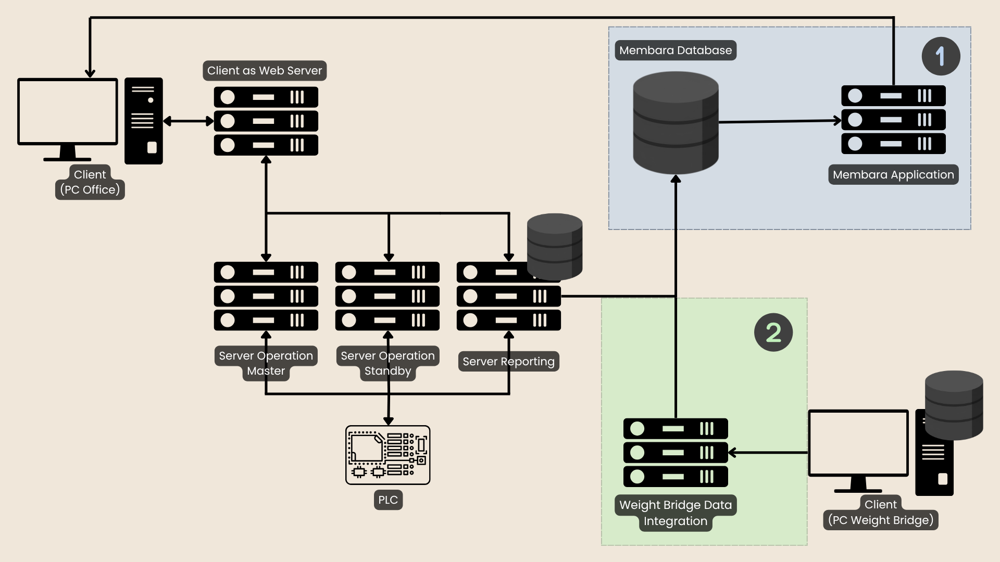

Portfolio Details

Project Information
- Category: Web Dashboard
- Project type: Internship
- Organization: PT Kaltim Prima Coal
- Project date: 22 June - 22 August, 2025
Project Overview
This project involved enhancing an existing web dashboard and developing a new dashboard page to support additional monitoring and data visualization needs at CPHD, PT Kaltim Prima Coal.
My contributions included adding new features to the existing dashboard, correcting inaccurate data mappings, and developing a new page from scratch with interactive filters and an Excel export feature. The filters allow users to costumize and apply data views based on their needs, while the export feature generates filtered data using the department's excel template.
To support the new dashboard page, I also developed a data integration process between the existing Microsoft Access 2007 database and the department's centralized Microsoft SQL Server database. Since the existing system continued to use Microsoft Access 2007 as its data source, I developed an automated Python-based process to periodically retrieve data from Access and synchronize it with SQL Server every 10 seconds, allowing the new dashboard page to access updated data from the centralized database.
Key Features
Dashboard Enhancement
Enhanced the existing dashboard by adding new features and correcting inaccurate data mappings to improve functionality and data accuracy
Automated Data Transfer
Developed an automated program to transfer data from Microsoft Access 2007 to Microsoft SQL Server every 10 seconds, keeping the dashboard up to date.
Interactive Dashboard
Developed a new dashboard page with interactive filters allowing users to costumize and apply data views based on their needs.
Excel Report Export
Implemented an Excel export feature that generates filtered data using the department's report template, simplifying the reporting process.
Implementation Workflow

During my internship at PT Kaltim Prima Coal (KPC), i worked on the enhancement and integration of an existing OT-IT system. The existing architecture consisted of operational servers, PLCs, web server, database, and web applications.
The blue section marked with number 1 represents the components I modified. I modified the existing Membara Database in Microsoft SQL Server to support the newly developed dashboard features and subsequently updated the Membara Application to utilize and display the required data. These enhancements involved extending the existing system rather than developing the application from scratch.
In addition, I developed a Python-based data integration process for the Weight Bridge system that shown in the green section marked with number 2. The Weight Bridge operated with a local database on its client PC, while the department maintained a centralized Membara Database. I used Python and SQL to establish the database integration, retrieve Weight Bridge data from the local database, and synchronize it with the central database.
The integration process was executed automatically every 10 seconds using Windows Task Scheduler to run a batch script, allowing operational data to be transferred without manual intervention. This integration enabled data originating from the Weight Bridge system to be incorporated into the department's centralized database and subsequently utilized by the Membara Application and its dashboard features.